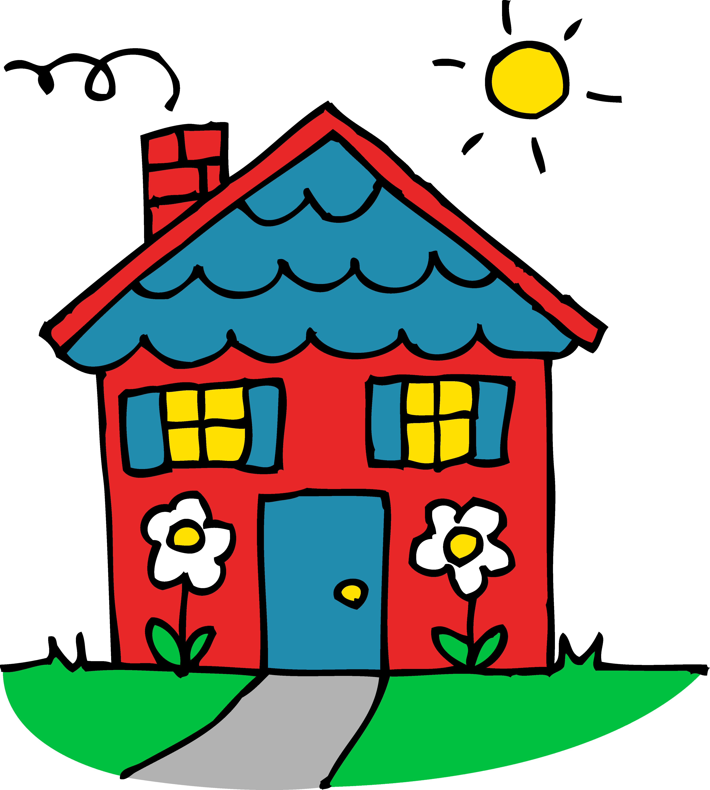

Aesthetics of the Internet
I found this piece extremely interesting. "Aesthetics of the Internet" talks about how everything online is connected to everything else; nothing ever truly exists completely on its own. For example, my page here is hosted by Github and uses an image I found through Google search! Speaking of Google search, Google is a great example of a piece of the Internet that is both reliant upon and a huge connector and supporter of other web content. Reading "Aesthetics of the Internet" and learning about the idea of interconnection as a key component of the Internet made me think of a Magic School Bus episode I once saw. In it, Ms. Frizzle and her students (and lovely Liz the lizard, of course), head to the rainforests of South America to solve the mystery of why Ms. Frizzle's adopted cocoa bean tree is not producing any cocoa beans. Long story short, the kids take a look around and discover that everything around them is a part of a small web, which in turn is a part of a bigger web, which eventually feeds in to the overall web of life! The students realize that even the most seemingly unrelated things may be connected, and they learn a valuable lesson about the potential impact of every choice they make. I feel that this lesson is very relevant to the Internet. Not only does everything that gets put on the Internet leave a permanent mark of some sort, it affects other things that are out there. An image, story, or quote originally posted on one site may be borrowed and featured on another. A goofy, bizarre, or touching video may go viral and end up on major news websites. The possibilities for impact are endless, both on and offline. For that reason, it is important to be sure that anything you post is something you are proud of posting. It is the responsibility of all of us to keep the Internet a cool place to be!
UX/UI Design
I really got a lot out of checking out these articles. It was really great to be able to have articulated in front of me the principles of good design. I feel like just about anyone can differentiate a good design from a bad one when asked to use a website, but it is sometimes a struggle to do this during the creation process. I think this has a lot to do with the fact that a designer already knows what she’s making inside and out before she even creates it; a user has no clue. In my opinion, one of the most important principles discussed in these readings was the idea that more is not necessarily better. There is almost nothing I find more mentally distracting than one of those sites with a neon background and sparkles and eight0hundred dancing 3D characters scattered all around. Sometimes something minimal and sedate really is more effective at communicating information. It allows what’s most important to stand out. Also, crazy sites nowadays are almost always labeled as untrustworthy. This is a shame, because in years past, I’ve come across a lot of great information from genuinely reputable sources (like authors, doctors, and professors) presented on really awful websites. Because of nothing more than a lack of web knowledge and some bad design choices, a doctor’s research could be labeled a scam! Simplicity is definitely a value I personally will strive to keep in mind!
Go Home!
Image Courtesy of clipartpanda.com.